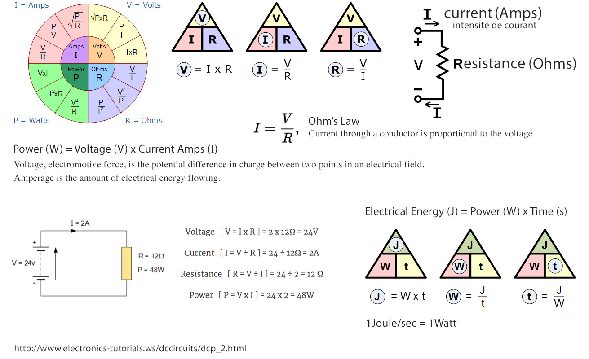

On a standard wall outlet (120VAC)...
1 kwh gets an e-scooter 20 miles (from 6 hours of charging)
1 kwh gets a Telsa about 3 miles (from 1 hour of charging)
Telsa charging requires 750 watts of overhead to run the cooling circuits and pumps, plus initial losses.
120VAC is only about 50% efficient, requiring 2kWhr to put 1kWhr into the batteries.
120VAC @ 12A = 1440 watts (Leaves about 690 watts going into the batteries.)
240VAC @ 32A = 7680 watts (Leaves 6930 watts going into the batteries. 90% efficient.

Electronics Tutorials